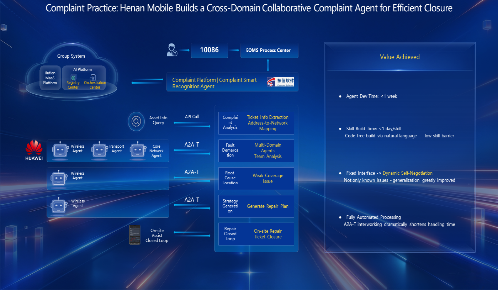
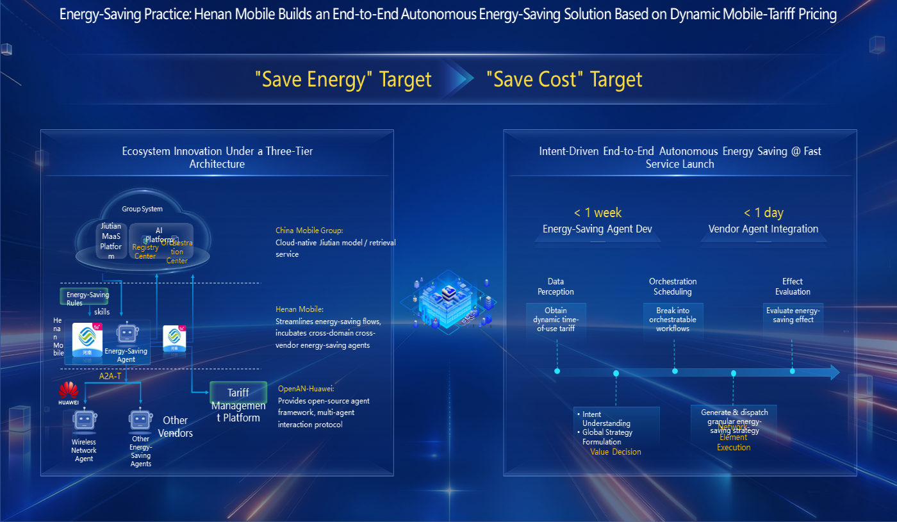

Multi-Agent Use Case · Validating multi-agent collaboration with live-network production practice
Facing the three challenges of agent-based intelligence — how to build agents quickly, how to run them flexibly, and how to use them safely — Henan Mobile explores a new model for the agile construction, autonomous handling and secure operation of network agents from two angles: "Agent architecture innovation + production practice".
With the A2A-T (Agent-to-Agent for Telecom) protocol as the link, and built on the OpenAN agent framework, Henan Mobile develops a cross-domain collaborative complaint handling agent and a dynamic energy-saving agent, accelerating OpenAN from "technology open-source" toward "commercial production".
Pursuing the "Three-izations" — network resource monetization, network energy-efficiency greening, and network capability intelligence — Henan Mobile advances its network capability building, but its intelligent evolution faces two major challenges.
To overcome these challenges and enable end-to-end automation across scenarios, Henan Mobile explores a new model for agile agent construction, autonomous handling and secure operation based on OpenAN.
Henan Mobile builds a cross-domain collaborative complaint handling agent that acts as the intelligent recognition engine of the complaint platform. It bridges 10086, the EOMS process center and specialized agents, and relies on the A2A-T protocol for autonomous negotiation and joint fault location with cross-vendor agents — wireless optimization, wireless fault, core network fault and SPN fault — delivering an end-to-end automated closed loop.

Henan Mobile shifts the goal from traditional single-minded "energy saving" to "electricity-cost optimization" based on dynamic time-of-use tariffs. Through ecosystem innovation under a three-tier architecture, it jointly builds an end-to-end autonomous wireless energy-saving solution with Huawei's wireless network agent — spanning data perception, value decision, orchestration scheduling, network-element execution and effect evaluation.

From the A2A-T protocol to multi-agent collaborative architecture innovation, Henan Mobile — as the first joint-innovation pilot of OpenAN Phase II — is turning agent-driven production workflows into business value, and will keep deepening scenario validation and capability reuse to drive the landing of network intelligence innovation.
"From complaint handling to dynamic energy saving, Henan Mobile is exploring how to bring agents into production workflows and turn rapid construction, dynamic collaboration and secure operation into business value. Next, we will join hands with partners to continuously deepen scenario validation and capability reuse, and drive the landing of network intelligence innovation results."
"A thriving open ecosystem of autonomous-network agents is one of the keys to advancing toward AN L4. Huawei will keep investing in wireless OpenAN and fully support Henan Mobile in building a benchmark that combines high-level autonomous networks with production practice, continuously empowering wireless network productivity with technology dividends."
The joint innovation results — the cross-domain collaborative complaint handling agent and the intent-driven dynamic energy-saving solution — were officially released at the 2026 Mobile Network Conference (MobileLink 2026).